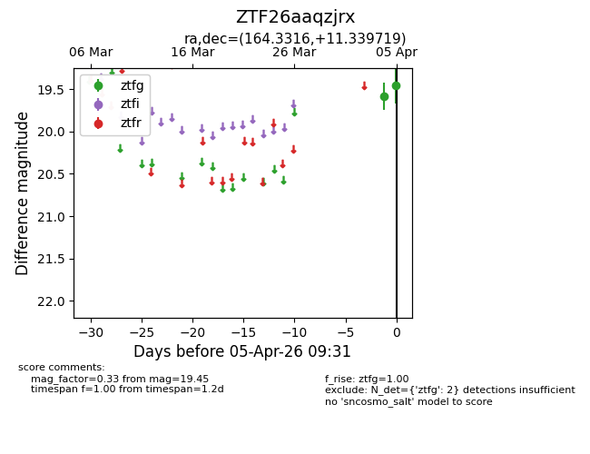
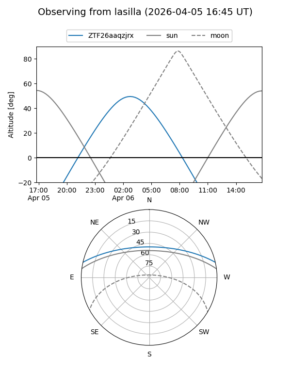
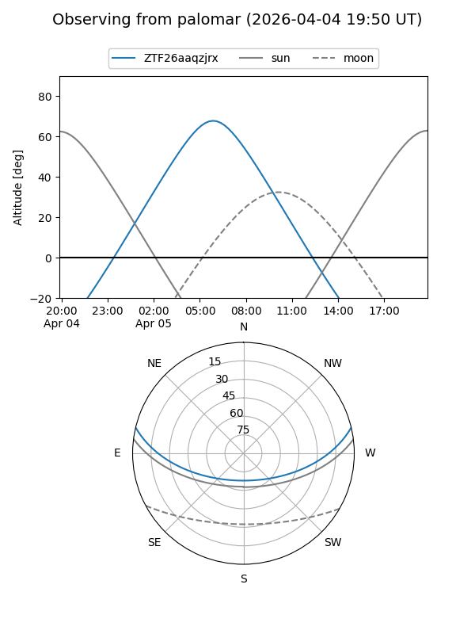

ZTF26aaqzjrx
Target ZTF26aaqzjrx at 2026-04-05 09:38
Aliases and brokers:
FINK: link
Lasair: link
ALeRCE: link
alt names
ZTF26aaqzjrx (ztf,fink_ztf)
Coordinates:
equatorial (ra, dec) = 164.3316,+11.33972
equatorial (HMS+DMS) = 10:57:19.58,+11:20:22.99
galactic (l, b) = (237.8766,+58.90628)
Flags:
Photometry:
last ztfg=19.45
2 ztfg detections
Lightcurve

Visibility


Additional plots